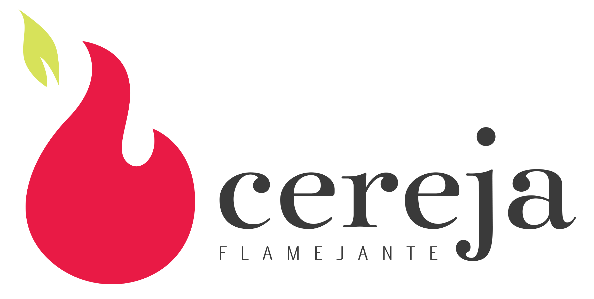

No mundo da Lua e da inovação
Um encontro entre IA, criatividade, energia e cultura.
Tecnologia & cultura
Assinar a newsletterCultura × tecnologia × curiosidade
Ideias, descobertas e referências para olhar o mundo por outro ângulo. Uma curadoria de Kell Bonassoli.
O arquivo continua vivo
Um encontro entre IA, criatividade, energia e cultura.
Tecnologia & culturaVibe coding, MCP e referências culturais no mesmo percurso.
Inteligência artificialFerramentas de IA e escolhas humanas na conversa sobre criar.
CriatividadeSó horizontes. Uma edição para descobrir no arquivo.
Do arquivoSó não a que esperamos. Explore a edição completa.
Do arquivoPontos de encontro
Quem faz a Cereja
Marketing, comunicação e estratégia de conteúdo são meu ponto de partida para investigar como organizamos conhecimento e trabalhamos com IA.
Escrevo a Cereja Flamejante e sou palestrante pela Escola da Transformação Digital. Meu trabalho explora Context Engineering for Marketing & Knowledge Work: o que um agente deve conhecer, carregar e confiar — e como seu trabalho deve ser verificado.
Da pergunta ao experimento
Projetos públicos para tornar decisões de contexto e revisão mais claras.
Fontes, histórico editorial e estados de tese. Inclui um primeiro inventário de edições públicas.
Protótipo documental
Explorar o projetoSeleção de contexto, revisão de evidências e aprovação humana. O primeiro briefing tem manifesto manual.
Protótipo documental
Explorar o projetoUm seletor executável com fontes rastreáveis e orçamento estimado de contexto.
Implementação de referência · resultados de avaliação pendentes
Explorar o projetoContinue a conversa
Leia as edições e assine a Cereja no Substack.